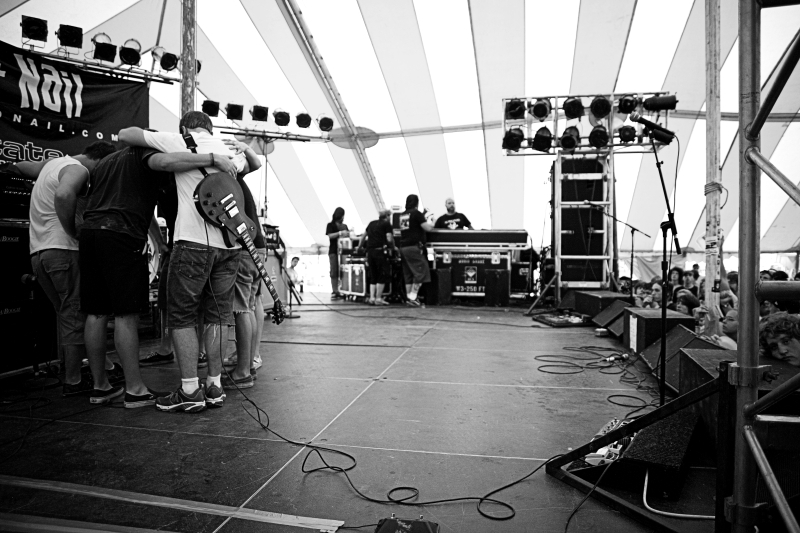
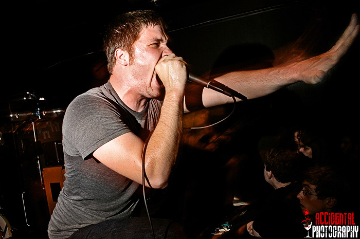

|
July 25th, 2007
IMPORTANT!! We have been hard at work getting ready to get back out playing shows, and things are going really well. Unfortunately, James Allen is no
longer a part of Life In Your Way. It's sad to see him go, but he felt it
was his time. James has been a key part of this band since he joined 3.5
years ago, and we wish him the best. Catch him and Dave on tour right now
with Play Radio Play!! Dave plays guitar and james is managing this tour for those guys! We miss them.
We are excited to anounce that Corey Stroffolino formerly of The Risk Taken has joined Life In Your Way!! Both Corey and Todd have been doing a great job so far, and we can't wait to get back on the road and introduce the world to this new line up!!
We have a lot of exciting things in store, and are so thankful that we can
keep doing this. Please stick with us!!
July 7th, 2007

Thanks to everyone who came out this past tour and all the people we got to hang out with at C-stone. It was a blast.
One important thing for us about this past tour was that it was Dave's last in the band. Dave has been with us for 3 years and recorded 2 albums in the band. He was a key member and will be missed dearly. Thanks to him for all his passion and hard work.
His re-placement will be a founding member of LIYW returning to the band, Todd Mackey. Todd is coming back after 4 years, He is simply the right person for the position. So, be excited!
We have a few festivals lined up and should be getting tour dates up shortly for Late August or September. Be on the lookout for those.
Thanks from LIYW
May 12th, 2007

Thanks to everyone who came out for the "In Your Face Tour". It was a blast. So many great shows and even greater kids.
We've got some shows coming up with August Burns Red, along with their CD
release show on June 22nd. Come on out have some fun with us!
|
|